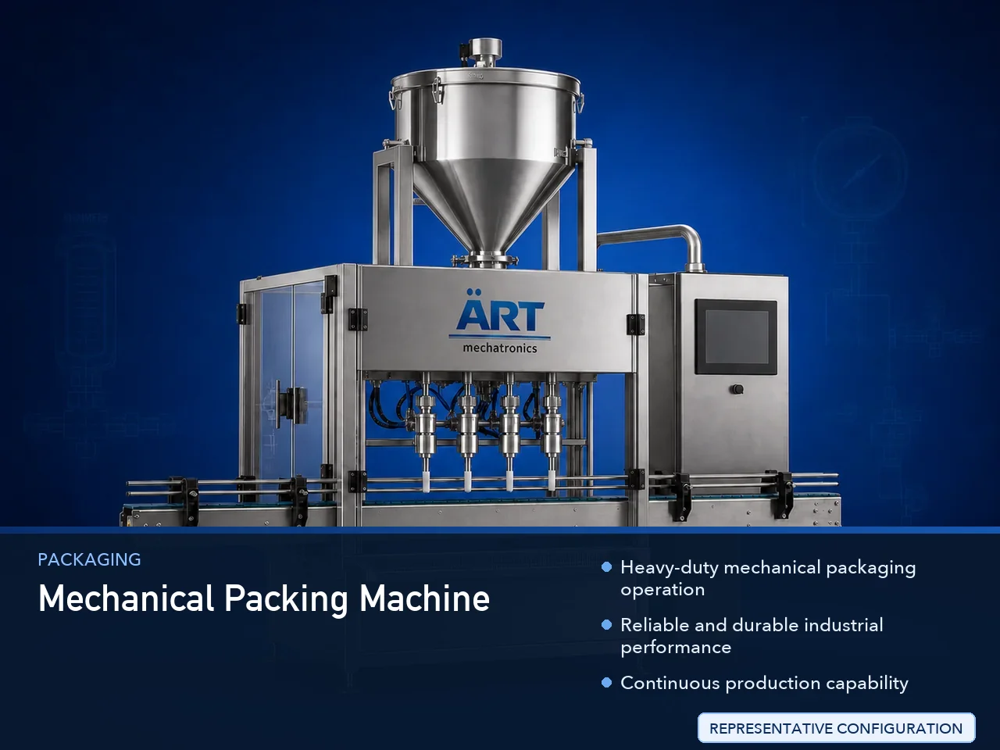

Mechanical Packing Machine (Industrial Mechanical Packaging & Filling System)
A Mechanical Packing Machine, also known as a Mechanical Packaging Machine, Cam Operated Packing Machine, or Industrial Mechanical Pouch Packing Machine, is a robust industrial packaging solution designed for automatic pouch forming, filling, sealing, cutting, dosing, and continuous packaging…

About the Mechanical Packing Machine
Mechanical packing systems are widely used for: ✔ Automatic pouch packaging ✔ Continuous industrial production ✔ High-speed mechanical filling operations ✔ FMCG packaging lines ✔ Powder and granule packaging ✔ Reliable industrial packaging applications
The machine improves: ✔ Packaging efficiency ✔ Mechanical reliability ✔ Production speed ✔ Packaging consistency ✔ Operational durability ✔ Labor reduction
Industrial mechanical packing machines use: ✔ Mechanical cam systems ✔ Gear-driven synchronization mechanisms ✔ Crank and linkage movements ✔ Chain drive systems ✔ Motorized packaging controls
to perform synchronized and reliable packaging operations with strong mechanical stability and long service life.
Mechanical packing machines are widely used in industries such as:
Pan masala & mouth freshener industries
Tobacco industries
Food processing industries
Spice industries
FMCG industries
Chemical industries
Pharmaceutical industries
Consumer goods industries
where continuous industrial packaging and reliable mechanical performance are essential.
The machine is highly suitable for: ✔ Pan masala packing ✔ Tobacco pouch packaging ✔ Spice packing ✔ Granule packaging ✔ Powder packaging ✔ FMCG pouch packing
ART Mechatronics offers high-performance mechanical packing machines, engineered for continuous industrial operation, rugged mechanical reliability, accurate packaging, and long-term performance stability.
Working Principle of Mechanical Packing Machine
Products are fed into machine through: ✔ Cup fillers ✔ Auger fillers ✔ Conveyors ✔ Vibratory feeders ✔ Manual feeding systems
Motor-driven mechanical systems operate: ✔ Cam mechanisms ✔ Gear systems ✔ Crank assemblies ✔ Chain drives
Mechanical synchronization controls pouch movement, filling, sealing, and cutting operations continuously.
Machine handles: ✔ Powders ✔ Granules ✔ Pan masala ✔ Tobacco ✔ Spices ✔ Seeds ✔ FMCG products smoothly and efficiently.
Mechanical sealing systems perform: Center sealing Side sealing Sachet sealing Pouch cutting accurately and continuously.
Mechanically synchronized systems support: Continuous operation Stable production output Long-duration industrial usage
Packed pouches discharged automatically for: Collection Cartoning Secondary packaging Dispatch operations
Types of Mechanical Packing Machines
- 1. Mechanical Pouch Packing Machine
Designed for: ✔ Standard industrial pouch packaging operations
- 2. Mechanical Powder Packing Machine
Suitable for: ✔ Powder filling and packaging systems
- 3. Mechanical Granule Packing Machine
Uses: ✔ Free-flow granule packaging applications
- 4. Cam Operated Packaging Machine
Designed for: ✔ Mechanically synchronized packaging operations
- 5. Food Grade Mechanical Packing Machine
Suitable for: ✔ Hygienic food and pharmaceutical packaging systems
- 6. Continuous Mechanical Packaging System
Designed for: ✔ High-output industrial packaging operations
Industries Using Mechanical Packing Machines
🌿 Pan Masala & Mouth Freshener Industry Pan masala and supari pouch packaging systems 🚬 Tobacco Industry Tobacco, khaini, and nicotine pouch packaging systems 🌶️ Spice Industry Spice powder and seasoning packaging systems 🍃 Food Processing Industry Grain, flour, namkeen, and ingredient packaging systems 🛒 FMCG Industry Consumer product pouch packaging systems 💊 Pharmaceutical Industry Sachet and medicine packaging systems ⚗️ Chemical Industry Powder and granule chemical packaging systems 📦 Consumer Goods Industry Retail pouch packaging systems
Features & Advantages
✔ Heavy-duty mechanical packaging operation ✔ Reliable and durable industrial performance ✔ Continuous production capability ✔ Accurate filling and sealing operation ✔ Lower maintenance electronic dependency ✔ Long service life mechanical structure ✔ Supports multiple pouch formats and sizes ✔ Hygienic food-grade construction available ✔ Cost-effective industrial packaging solution
Technical Highlights
Machine Type: Mechanical pouch packing machine Mechanical powder packaging machine Mechanical FFS machine Packaging Material: Laminated films Polyester films Metalized films Drive System: Gear drive mechanism Cam synchronization system Mechanical crank systems Features: Mechanical motion synchronization Temperature controllers Batch coding integration Adjustable packaging speed Filling Integration: Cup fillers Auger fillers Volumetric systems Automation: Semi-automatic Fully automatic mechanical systems
Turnkey Mechanical Packaging Solutions
ART Mechatronics offers: Complete mechanical packaging systems Automatic pouch filling and sealing solutions Packaging automation integration systems Industrial production line synchronization Installation & commissioning After-sales service & AMC
Why Choose Art Mechatronics
Expertise in industrial packaging and mechanical automation systems Customized mechanical packing solutions for multiple industries High-performance and durable mechanical technology Rugged industrial construction and long operational life Proven industrial packaging performance across sectors
Applications
Pan Masala Manufacturing Plants Tobacco Processing Units Food Processing Industries FMCG Packaging Facilities Pharmaceutical Industries Spice Processing Plants
Get pricing & specs for the Mechanical Packing Machine
Share the product, target capacity, current process and plant location. These details help our engineers discuss the right machine or line configuration.
One partner, from design to start-up
ART Mechatronics designs, manufactures, installs and commissions your Mechanical Packing Machine solution with regional presence in India, UAE and Thailand.